Stat 470/670 Lecture 19: Ordered and unordered
categorical responses
Julia Fukuyama
Ordered categorical responses: polr()
Optional reading: Gelman & Hill pp. 119–123.
With categorical regression, the main distinction is between models
with ordered categories and models with unordered categories. Let’s
start with the ordered case.
Fake data: Grad school
Let’s use the (simulated) data on the potential grad school
application of college students at
http://stats.idre.ucla.edu/r/dae/ordinal-logistic-regression/
The data purports to be for 400 juniors asked how likely they are to
apply to grad school.
The variables:
apply gives a student’s intention to apply to grad
school, where 0 means unlikely, 1 means somewhat likely, and 2 means
very likely.
pared is a binary variable indicating whether the
parent has a graduate degree.
public is a binary variable indicating whether the
student goes to a public college.
gpa is the student’s GPA.
We want to model how the likelihood of applying to grad school
depends on the other factors.
Notice that apply is an ordered categorical
variable.
We’ll read in the Stata data using import() in the
rio package:
library(rio)
gradschool = import("https://stats.idre.ucla.edu/stat/data/ologit.dta")
summary(gradschool)
## apply pared public gpa
## Min. :0.00 Min. :0.0000 Min. :0.0000 Min. :1.900
## 1st Qu.:0.00 1st Qu.:0.0000 1st Qu.:0.0000 1st Qu.:2.720
## Median :0.00 Median :0.0000 Median :0.0000 Median :2.990
## Mean :0.55 Mean :0.1575 Mean :0.1425 Mean :2.999
## 3rd Qu.:1.00 3rd Qu.:0.0000 3rd Qu.:0.0000 3rd Qu.:3.270
## Max. :2.00 Max. :1.0000 Max. :1.0000 Max. :4.000
library(dplyr)
gradschool$Likelihood = recode_factor(gradschool$apply,
"0" = "unlikely", "1" = "somewhat likely", "2" = "very likely",
## when we do .ordered = TRUE we create an ordered factor,
## which makes the default versions of some plots nicer.
.ordered = TRUE)
For a preliminary model, we’ll use gpa as our initial
explanatory variable. Let’s draw a jittered plot showing the
relationship between gpa and likelihood of applying to grad
school.
ggplot(gradschool, aes(x = gpa, y = Likelihood, color = Likelihood)) +
geom_jitter(width = 0, height = 0.2) + ggtitle("Likelihood of applying to grad school")
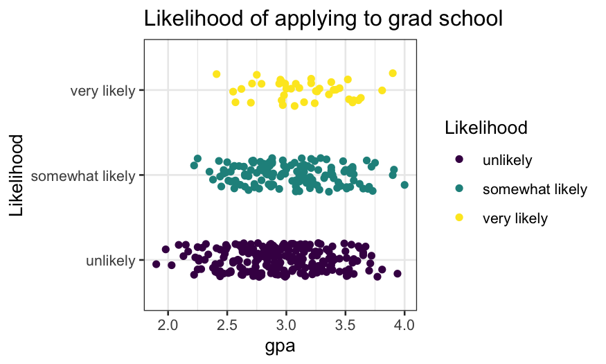
Note: this is not a very good plot.
- It shows the number of samples, the rough distribution of GPA within
each class of likelihood of applying to grad school.
- It’s ok but not great at showing the distribution of GPA given
likelihood of going to grad school – better would be a density plot,
violin plot, boxplot.
- It’s terrible at showing the probability of likelihood of going to
grad school given GPA.
Better ways of showing the distribution of GPA given likelihood of
applying to grad school:
ggplot(gradschool, aes(x = Likelihood, y = gpa, color = Likelihood)) +
geom_violin() + coord_flip() + ggtitle("Likelihood of applying to grad school")
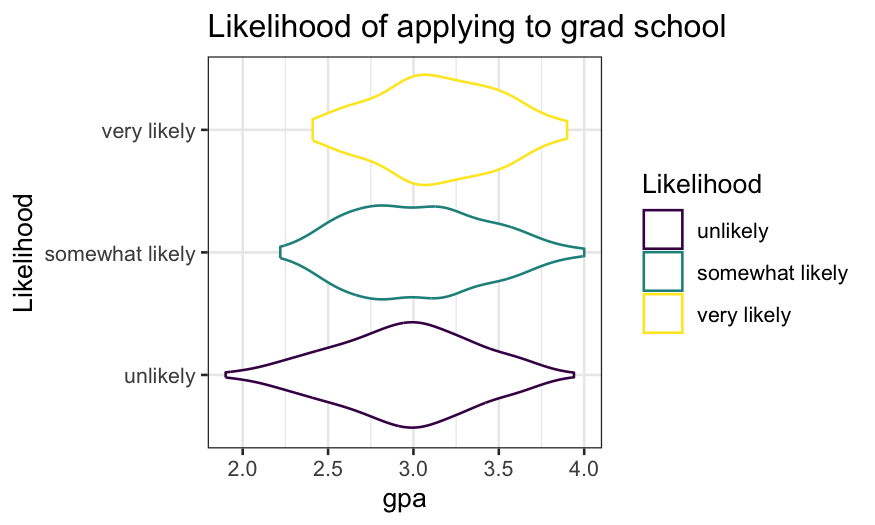
ggplot(gradschool, aes(x = Likelihood, y = gpa, color = Likelihood)) +
geom_boxplot() + coord_flip() + ggtitle("Likelihood of applying to grad school")

Next task: visualize the distribution of likelihood of applying to
grad school given GPA
Attempt 1 (ok, but not great):
ggplot(gradschool, aes(x = gpa, fill = Likelihood)) +
geom_histogram(breaks = seq(1.8, 4, 0.2)) +
ggtitle("Likelihood of applying to grad school")
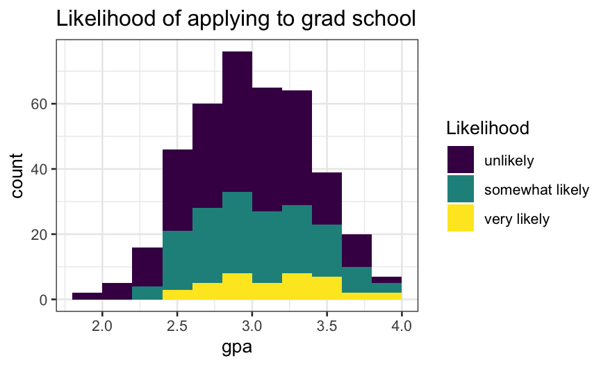
Attempt 2:
- Think of this as a modification of
position = "stack"
where the bars have been expanded to all be the same height.
- The height of each bar is an approximation of \(P(\text{likelihood} | \text{gpa})\)
ggplot(gradschool, aes(x = gpa, fill = Likelihood)) +
geom_histogram(breaks = seq(1.8, 4, .2), position = "fill") +
ggtitle("Likelihood of applying to grad school")
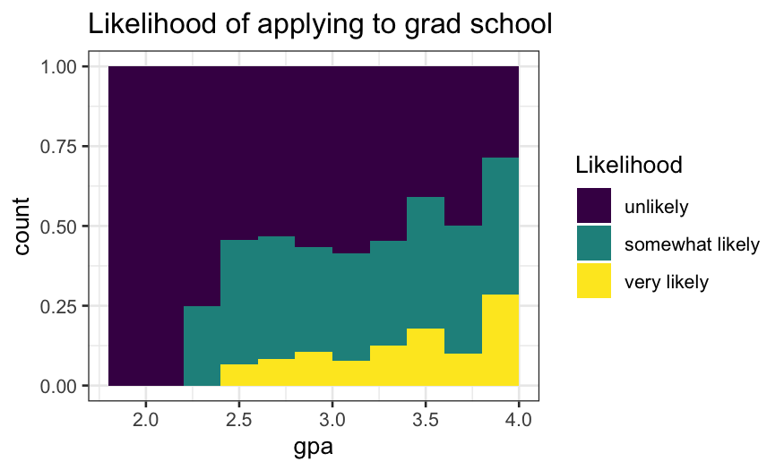
Trying the same thing with density estimates instead of
histograms:
- The density version of a stacked histogram.
ggplot(gradschool, aes(x = gpa, fill = Likelihood)) +
geom_density(position = "stack") +
ggtitle("Likelihood of applying to grad school")
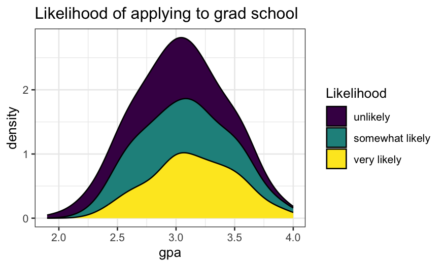
- As with the histograms, we can use
position = "fill"
to plot conditional density estimates.
- As before, the height of the filled area at any given GPA tells
gives us an estimate of \(P(\text{likelihood}
| \text{gpa})\)
ggplot(gradschool, aes(x = gpa, fill = Likelihood)) +
geom_density(position = "fill") +
ggtitle("Likelihood of applying to grad school")
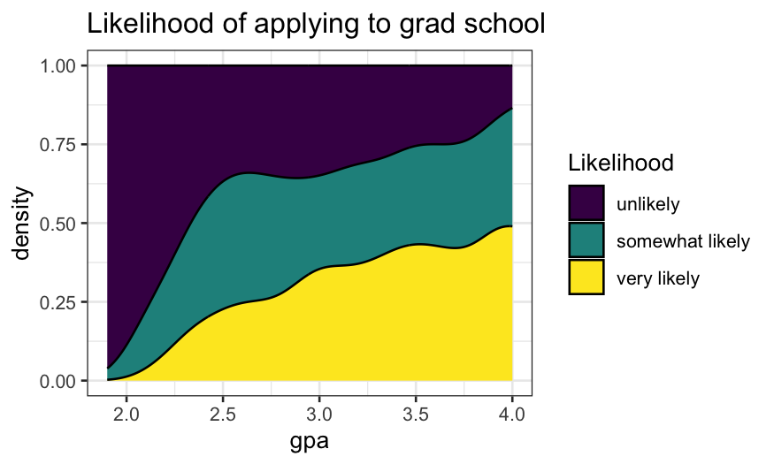
Modeling ordinal responses
What if we’d prefer to fit a model? The option we’ll pursue is
proportional odds logistic regression, fitted in R using the
polr() function in MASS.
Let’s first fit the model, then explain what it means.
library(MASS)
gpa.polr = polr(Likelihood ~ gpa, data = gradschool)
library(arm)
display(gpa.polr)
## polr(formula = Likelihood ~ gpa, data = gradschool)
## coef.est coef.se
## gpa 0.72 0.25
## unlikely|somewhat likely 2.37 0.76
## somewhat likely|very likely 4.40 0.78
## ---
## n = 400, k = 3 (including 2 intercepts)
## residual deviance = 732.6, null deviance is not computed by polr
The model gives us both a linear predictor (on a logit
scale) and cutpoints.
- The linear predictor is \[
0.72 \times \textrm{GPA}
\] (Note that the form of the model fitted by
polr()
has no intercept.)
- The cutpoints correspond to boundaries between groups: the boundary
between group 0 (unlikely) and group 1 (somewhat likely) is 2.37, while
the boundary between group 1 and group 2 (very likely) is 4.4 (found in
gpa.polr$zeta).
- To get deterministic predictions, we compare the linear predictor to
the cutpoints. So if a student has a GPA of 3.5, our linear predictor
would be \(.72 \times 3.5 = 2.52\).
Since this is above the cutoff between the “unlikely” and “somewhat
likely” groups but below the cutoff between the “somewhat likely” and
“very likely”, so our prediction for someone with a 3.5 GPA is that they
are “somewhat likely” to apply to grad school.
polr() and probability
Deterministic predictions are the analog of the maximum likelihood
predictions in logistic regression. But just as in logistic regression,
we can also get fitted probabilities of all the possible categories for
any observation.
According to the proportional odds logistic regression model, if we
have an observation with predictor \(x\), a coefficient \(\beta\), and cutpoints between the
categories, the probability that the response variable falls in category
\(i\) are \[
P(x \beta + \epsilon \in [z_i, z_{i+1}])
\] if \(\epsilon\) is a random
variable with a standard
logistic distribution and \(z_i\)
and \(z_{i+1}\) are the cutpoints
corresponding to the upper and lower boundaries for category \(i\).
Because we might not be used to the logistic distribution, let’s
first use simulation to estimate the distribution of the latent variable
for a person with a 3.5 GPA.
To find this probability in the model we fit above, we would:
- Find the linear predictor based on their GPA;
- Add random logistic noise;
- Compare this “latent” variable to the cutpoints;
- Repeat lots of times and compute the fraction of times the latent
variable fell into each of the categories.
Their linear predictor is \(0.725 \times
3.5 = 2.54\). We add logistic noise and see how often they fall
in each cutpoint range.
prediction = coefficients(gpa.polr) * 3.5
latent = prediction + rlogis(10000)
ggplot(as.data.frame(latent), aes(x = latent)) + geom_density() +
geom_vline(xintercept = gpa.polr$zeta, color = "red")
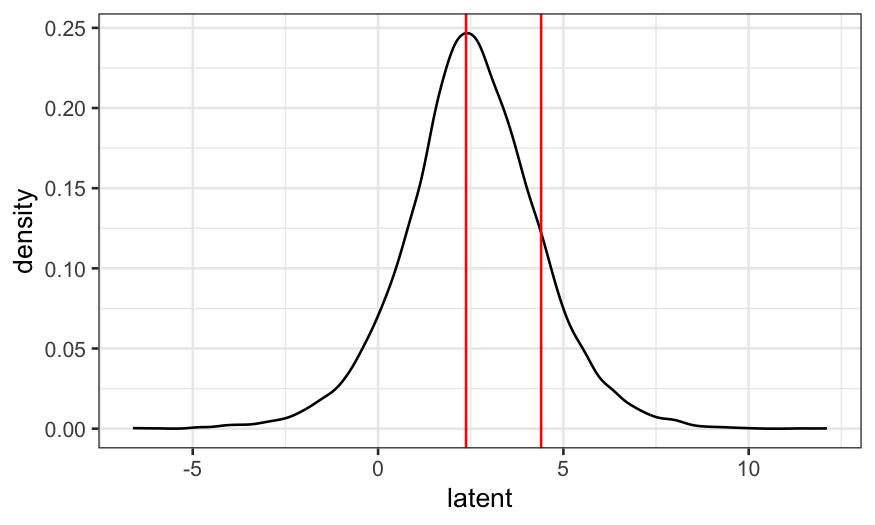
We see that the left and middle areas are bigger than the right area.
This means that “unlikely” and “somewhat likely” are more probable than
“very likely.”
We can also find the fraction of times the latent variables fall in
each range:
## what fraction of the time did the latent variables fall below the cutoff for "unlikely"
mean(latent <= 2.3748)
## [1] 0.4649
## what fraction of the time did the latent variables fall between
## the cutoff values corresponding to the "somewhat likely" category?
mean(latent > 2.3748 & latent <= 4.3998)
## [1] 0.3945
## what fraction of the time did the latent variables fall above the
## cutoff for "very likely"?
mean(latent > 4.3998)
## [1] 0.1406
So that we can compare with the predictions in the model later, let’s
find the exact probabilities. The probability of being “unlikely” is
\[
P(\beta x + \epsilon < z_{unlikely|somewhat})
\]
where \(x\) is GPA, \(\epsilon\) is standard logistic noise, and
\(z_{unlikely|somewhat}\) is the lower
cutpoint. This is the same as
\[
P(\epsilon < z_{unlikely|somewhat} - \beta x)
\]
i.e., the probabilistic a standard logistic random variable is less
than \(z_{unlikely|somewhat} - \beta
x\).
We find logistic probabilities using the inv.logit()
function in boot.
beta = coefficients(gpa.polr)
zeta = gpa.polr$zeta
library(boot)
##
## Attaching package: 'boot'
## The following object is masked from 'package:arm':
##
## logit
inv.logit(zeta[1] - beta * 3.5)
## unlikely|somewhat likely
## 0.4595418
There’s a 46% chance a person with a 3.5 GPA is “unlikely” to apply
to grad school. Similarly, the probability they’re “very likely” to
apply to grad school is the probability a standard logistic random
variable is greater than the difference between the second
cutpoint and the linear predictor:
1 - inv.logit(zeta[2] - beta * 3.5)
## somewhat likely|very likely
## 0.1343714
There’s a 13% chance they’re “very likely.” That leaves a 41% chance
they’re “somewhat likely.”
Now that we know what we’re doing, we can just get these
probabilities using predict():
predict(gpa.polr, newdata=data.frame(gpa=3.5), type = "probs")
## unlikely somewhat likely very likely
## 0.4595418 0.4060868 0.1343714
Graphing and checking the model
Let’s display the fit as a function of GPA.
gpa = seq(min(gradschool$gpa), max(gradschool$gpa), 0.01)
grad.probs = predict(gpa.polr, newdata = data.frame(gpa), type = "prob")
grad.probs.df = data.frame(gpa, grad.probs)
names(grad.probs.df) = c("GPA", "Unlikely", "Somewhat Likely", "Very Likely")
library(tidyr)
grad.probs.long = grad.probs.df %>% gather(Likelihood, Probability, 2:4)
grad.probs.long$Likelihood = factor(grad.probs.long$Likelihood, levels = c("Unlikely", "Somewhat Likely", "Very Likely"), ordered = TRUE)
ggplot(grad.probs.long, aes(x = GPA, y = Probability, group = Likelihood, color = Likelihood)) +
geom_line() +
ggtitle("Likelihood of applying to grad school")
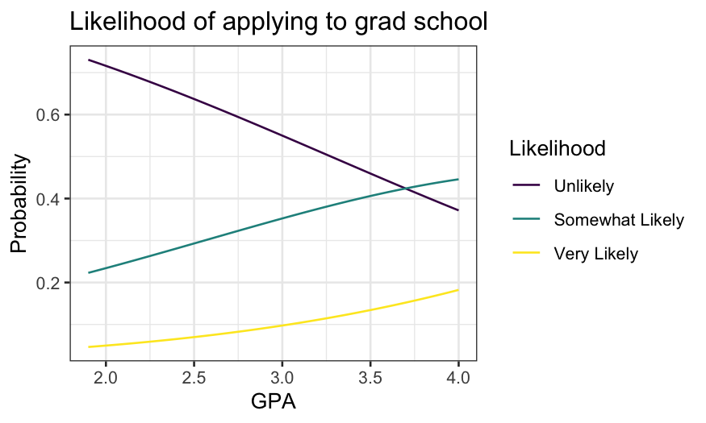
The probability of both “somewhat likely” and “very likely” increase
with GPA, though “very likely” never gets very high.
We can also stack the lines and use areas:
ggplot(grad.probs.long, aes(x = GPA, y = Probability, group = Likelihood, fill = Likelihood)) +
geom_area() +
ggtitle("Likelihood of applying to grad school")

Multiple predictors
Let’s now include two other variables in the model:
pared is a binary variable indicating whether a parent has
a grad degree, and public is a binary variable indicating
whether the student goes to a public college.
grad.polr = polr(Likelihood ~ gpa + pared + public, data = gradschool)
display(grad.polr)
##
## Re-fitting to get Hessian
## polr(formula = Likelihood ~ gpa + pared + public, data = gradschool)
## coef.est coef.se
## gpa 0.62 0.26
## pared 1.05 0.27
## public -0.06 0.30
## unlikely|somewhat likely 2.20 0.78
## somewhat likely|very likely 4.30 0.80
## ---
## n = 400, k = 5 (including 2 intercepts)
## residual deviance = 717.0, null deviance is not computed by polr
The deviance has gone down by about 16 and the coefficients are in
the direction in you’d expect – your parents going to grad school means
it’s more probable you’ll go to grad school, while going to a public
college means it’s slightly less probable.
As for numerical responses, we can study the fit by using
expand.grid() to get a data frame of explanatories and
making predictions.
grad.grid = expand.grid(gpa = seq(min(gradschool$gpa), max(gradschool$gpa), 0.01), pared = 0:1, public = 0:1)
grad.predict = as.data.frame(predict(grad.polr, newdata = grad.grid, type = "probs"))
grad.polr.df = data.frame(grad.grid, grad.predict)
names(grad.polr.df) = c("gpa", "pared", "public", "Unlikely", "Somewhat Likely", "Very Likely")
We’ll append a new variable that gives the combination of
pared and public.
pared_descriptive = recode(grad.polr.df$pared, "0" = "No grad parent", "1" = "Grad parent")
public_descriptive = recode(grad.polr.df$public, "0" = "private college", "1" = "public college")
grad.polr.df$Group = factor(paste(pared_descriptive, public_descriptive, sep = ", "))
head(grad.polr.df)
## gpa pared public Unlikely Somewhat Likely Very Likely
## 1 1.90 0 0 0.7376186 0.2204577 0.04192370
## 2 1.91 0 0 0.7364248 0.2214034 0.04217180
## 3 1.92 0 0 0.7352275 0.2223512 0.04242130
## 4 1.93 0 0 0.7340267 0.2233011 0.04267221
## 5 1.94 0 0 0.7328225 0.2242530 0.04292454
## 6 1.95 0 0 0.7316148 0.2252070 0.04317830
## Group
## 1 No grad parent, private college
## 2 No grad parent, private college
## 3 No grad parent, private college
## 4 No grad parent, private college
## 5 No grad parent, private college
## 6 No grad parent, private college
There are a few ways to view this data frame, but probably the
clearest is to draw a panel for each category.
grad.polr.long = grad.polr.df %>% gather(Likelihood, Probability, `Unlikely`:`Very Likely`)
grad.polr.long$Likelihood = factor(grad.polr.long$Likelihood, levels = c("Unlikely", "Somewhat Likely", "Very Likely"), ordered = TRUE)
ggplot(grad.polr.long, aes(x = gpa, y = Probability, color = Group)) + geom_line() + facet_grid(~Likelihood) + ggtitle("Likelihood of applying to grad school")
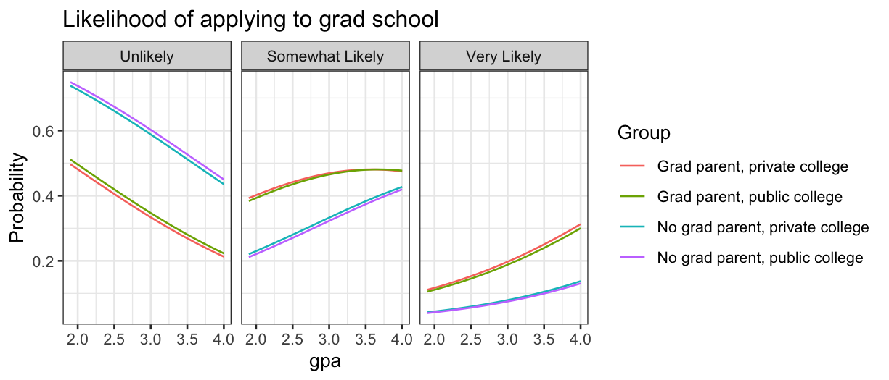
We see that private or public college makes almost no difference, so
we should consider dropping that from the model.
Unordered categorial responses: Alligator food
Optional reading: Agresti, Categorical Data Analysis, section 8.1
(3rd edition pp. 294–297.)
What do alligators like to eat? Researcher captured 219 alligators in
four Florida lakes, and categorized them by the primary contents of
their stomach.
The variables they collected were:
lake gives the lake where the alligator was
captured;
food is fish, invertebrate, reptile, bird, or
other;
count is how many of the 219 alligators had that
combination of lake, sex, size, and food.
alligator = read.table("../../datasets/alligator.txt", header = TRUE)
summary(alligator)
## lake sex size food
## Length:80 Length:80 Length:80 Length:80
## Class :character Class :character Class :character Class :character
## Mode :character Mode :character Mode :character Mode :character
##
##
##
## count
## Min. : 0.000
## 1st Qu.: 0.000
## Median : 1.000
## Mean : 2.737
## 3rd Qu.: 3.250
## Max. :16.000
Check that there are \(4 \times 2 \times 2
\times 5 = 80\) (lakes times sex times size times food) rows:
## [1] 80
Check that there are 219 alligators:
## [1] 219
One issue with categorical data is that different R function often
require the data to be in different formats. To get it over with, let’s
put the data in wide form. This will also let us print out a table with
fewer rows that gives all the data.
## The first argument to spread tells the function what variable
## you want to spread over the columns (food in this case)
## The second argument to spread tells the function what variable
## should go in the cells, in this case it is count
alligator.wide = alligator %>% spread(food, count)
alligator.wide
## lake sex size bird fish invert other reptile
## 1 George female large 0 8 1 1 0
## 2 George female small 0 3 9 1 1
## 3 George male large 1 9 0 2 0
## 4 George male small 2 13 10 2 0
## 5 Hancock female large 2 3 0 3 1
## 6 Hancock female small 2 16 3 3 2
## 7 Hancock male large 1 4 0 2 0
## 8 Hancock male small 0 7 1 5 0
## 9 Oklawaha female large 1 0 1 0 0
## 10 Oklawaha female small 0 3 9 2 1
## 11 Oklawaha male large 0 13 7 0 6
## 12 Oklawaha male small 0 2 2 1 0
## 13 Trafford female large 0 0 1 0 0
## 14 Trafford female small 1 2 4 4 1
## 15 Trafford male large 3 8 6 5 6
## 16 Trafford male small 0 3 7 1 1
Just by looking at the numbers we see that fish are relatively
popular, while birds and reptiles are unpopular. Our eventual goal will
be to build a model that gives the probability an alligator prefers each
type of food, based on the predictors we have.
Mosaic plots
As in the previous lecture, we can make mosaic plots describing the
variables.
Last time we used moisaic in vcd, but there
is also geom_mosaic in the ggmosaic package,
and we’ll use that function this time.
ggmosaic requires the data in “product” format (easily
achieved with the product() function) and a
weight variable. Here our weights are the counts of
alligators in each combination of categories. Let’s first draw a mosaic
plot breaking up the total sample of alligators by lake and food.
# install.packages('ggmosaic')
library(ggmosaic)
ggplot(alligator) +
geom_mosaic(aes(product(food, lake), weight = count, fill = food)) +
xlab("Lake") + ylab("Proportion of gators at that lake")
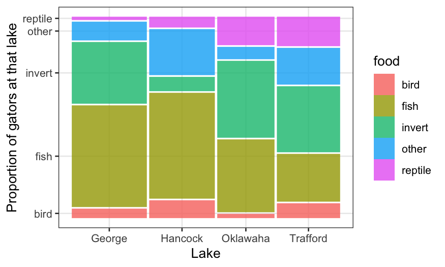
The above plot shows us the conditional distribution of each
type of food, given the lake, as well as the joint relative frequency of
each lake/food combination. The preferred types of food do seem to
differ a lot by lake.
We can also look at the other pairs of variables: food/size and
food/sex.
ggplot(alligator) +
geom_mosaic(aes(product(food, size), weight = count, fill = food)) + xlab("Alligator size")
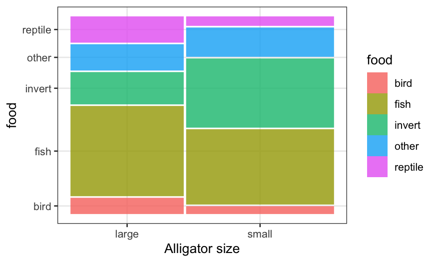
ggplot(alligator) +
geom_mosaic(aes(product(food, sex), weight = count, fill = food)) + xlab("Sex")
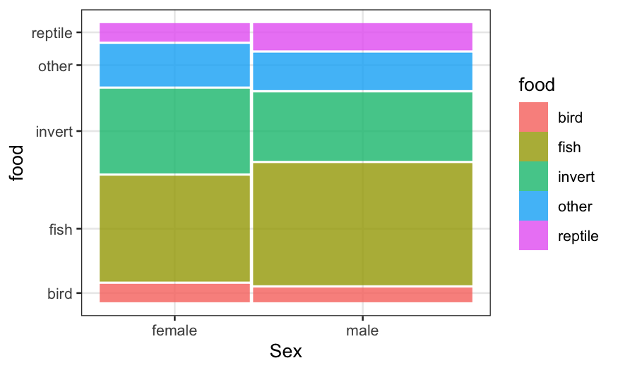
We see that in the sample, there are more small gators than large
ones, and more males than females. More importantly, the conditional
distribution of food looks quite different between big and small gators,
but quite similar comparing males and females.
We could keep on subdividing the bars in an attempt to look for
interactions, but this is messy. Combining mosaics with faceting is
preferable. In this case, because the data consists of a sample from
each lake, it makes sense to facet by lake.
ggplot(alligator) +
geom_mosaic(aes(product(food, size), weight = count, fill = food)) +
facet_wrap(~lake, ncol=2, labeller = label_context) + xlab("Alligator size")
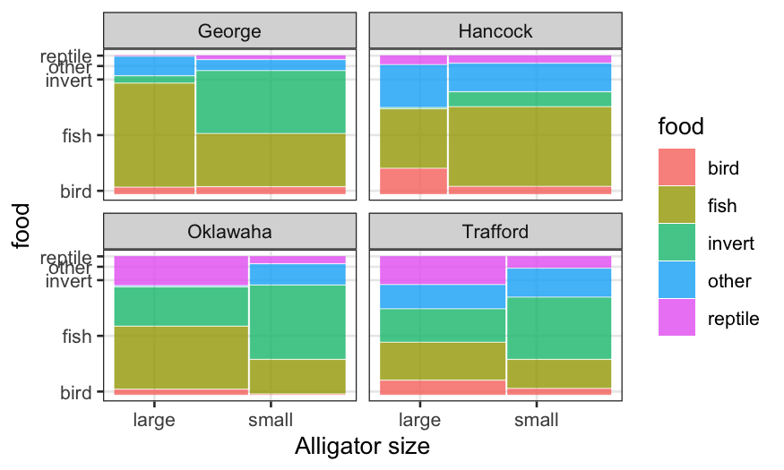
Multinomial regression
Let’s fit a model using lake and size as
predictors. For categorical responses, we want the conditional
distribution given the predictors to be multinomial. I use
the vglm() function (vector GLM) in package
VGAM to fit multinomial regressions. The syntax is similar
to that of glm() with family multinomial,
except you need to specify a matrix of responses (one column for each
category.) This can be done using cbind() with the data in
wide format.
# install.packages('VGAM')
library(VGAM)
alligator.mlogit = vglm(cbind(bird, fish, invert, other, reptile) ~ lake + size,
family = multinomial, data = alligator.wide)
alligator.mlogit
##
## Call:
## vglm(formula = cbind(bird, fish, invert, other, reptile) ~ lake +
## size, family = multinomial, data = alligator.wide)
##
##
## Coefficients:
## (Intercept):1 (Intercept):2 (Intercept):3 (Intercept):4 lakeHancock:1
## 1.2214559 3.3145327 1.7655141 1.4102610 -0.5476591
## lakeHancock:2 lakeHancock:3 lakeHancock:4 lakeOklawaha:1 lakeOklawaha:2
## -1.2427766 -2.9011352 -0.4165804 -3.1120797 -2.4588720
## lakeOklawaha:3 lakeOklawaha:4 lakeTrafford:1 lakeTrafford:2 lakeTrafford:3
## -1.5216526 -2.4532189 -1.8474865 -2.9352533 -1.8132685
## lakeTrafford:4 sizesmall:1 sizesmall:2 sizesmall:3 sizesmall:4
## -1.4188846 -0.2793969 0.3512628 1.8094675 0.6828131
##
## Degrees of Freedom: 64 Total; 44 Residual
## Residual deviance: 52.47849
## Log-likelihood: -74.42948
##
## This is a multinomial logit model with 5 levels
There are lots of coefficients here! These can be interpreted in
terms of log odds, but instead we’ll examine the model fit
graphically.
alligator.mlogit.df = data.frame(model.frame(alligator.mlogit), fitted.values(alligator.mlogit))
alligator.mlogit.long = alligator.mlogit.df %>% gather(food, probability, bird:reptile)
ggplot(alligator.mlogit.long, aes(x = food, y = probability)) + geom_point() +
facet_wrap(~lake + size, ncol = 4) + theme(axis.text.x = element_text(angle = 90))
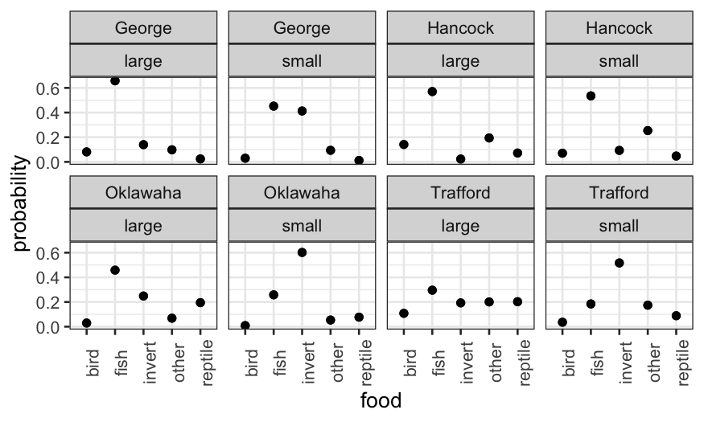
We could also collapse the large and small rows and color-code:
ggplot(alligator.mlogit.long, aes(x = food, y = probability, col = size)) +
geom_point() + facet_wrap(~ lake)
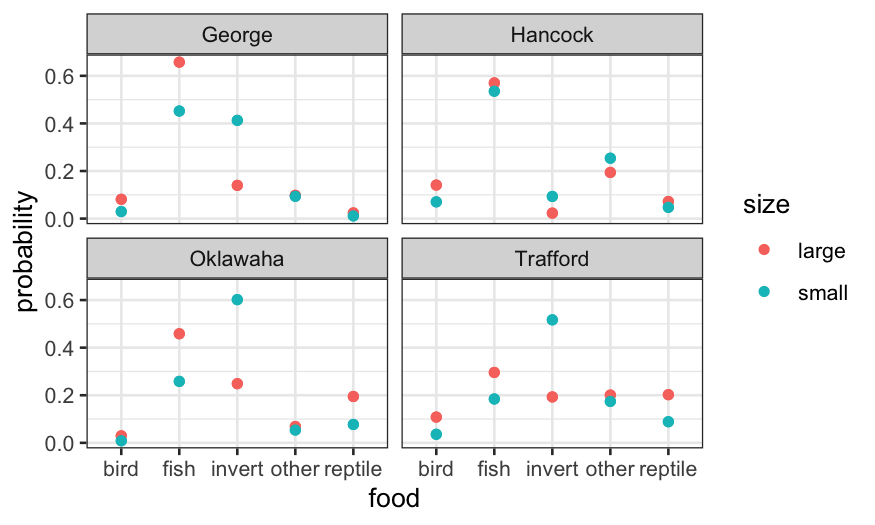
Let’s check the deviance of a couple of alternatives:
deviance(vglm(cbind(bird, fish, invert, other, reptile) ~ lake + size + sex, family = multinomial, data = alligator.wide))
## [1] 50.26369
deviance(vglm(cbind(bird, fish, invert, other, reptile) ~ lake * size, family = multinomial, data = alligator.wide))
## [1] 35.39866
Adding sex only reduces deviance by a trivial amount (less than the 4
extra degrees of freedom), and so is unlikely to be worth it.
Adding an interaction between lake and size reduces deviance by a
lot, but also makes the model much more complicated, so that’s a
judgment call.
Also note that when we add an interaction between categorical
predictors, this is just equivalent to taking the raw proportions for
each two-way combination of predictors. It therefore isn’t good at
giving us a parsimonious description of the data, but it might be good
for predictors.
Quantitative predictors
We can also fit multinomial models with quantitative predictors. In
the file gator2.txt, the numerical predictor is the length
of the alligator in meters.
The two variables are:
food: One of either Invertebrates,
Fish, or Other
Let’s read in the data and fit a multinomial logit model:
gator2 = read.table("../../datasets/gator2.txt", header = TRUE)
summary(gator2)
## length food
## Min. :1.240 Length:59
## 1st Qu.:1.575 Class :character
## Median :1.850 Mode :character
## Mean :2.130
## 3rd Qu.:2.450
## Max. :3.890
gator2.mlogit = vglm(food ~ length, family = multinomial, data = gator2)
gator2.mlogit
##
## Call:
## vglm(formula = food ~ length, family = multinomial, data = gator2)
##
##
## Coefficients:
## (Intercept):1 (Intercept):2 length:1 length:2
## 1.617731 5.697444 -0.110109 -2.465446
##
## Degrees of Freedom: 118 Total; 114 Residual
## Residual deviance: 98.34124
## Log-likelihood: -49.17062
##
## This is a multinomial logit model with 3 levels
As we did in the ordered categories case, let’s start making
predictions to understand the fit. First, on the linear predictor
(i.e. transformed) scale:
log.ratios = predict(gator2.mlogit, newdata = data.frame(length = 2))
log.ratios
## log(mu[,1]/mu[,3]) log(mu[,2]/mu[,3])
## 1 1.397513 0.7665519
This gives us the log probability ratios for one type of food to
another. The log of the probability ratio for fish to other is \(1.62 - 0.11 \times 2 \approx 1.4\) and for
invertebrates to other is \(5.7 - 2.47 \times
2 \approx 0.77\). (Note that vglm() take the
last level of the factor as the baseline, which is weird but is
what it is.)
We can look at the predictions on the probability scale, and then
check that all of our numbers are consistent with each other.
twometerprobs = predict(gator2.mlogit, newdata = data.frame(length = 2), type = "response")
twometerprobs
## Fish Invertebrates Other
## 1 0.5620216 0.2990405 0.1389379
To go from the probability scale to the linear predictor scale:
## note that this is the same as log.ratios above
log(twometerprobs[1:2] / twometerprobs[3])
## [1] 1.3975134 0.7665519
To go from the linear predictor scale to the probability scale:
## this is the same as twometerprobs above
exp(c(log.ratios, 0)) / sum(exp(c(log.ratios, 0)))
## [1] 0.5620216 0.2990405 0.1389379
Now let’s look at how these probabilities vary with length:
length = data.frame(length = seq(1.24, 3.89, 0.01))
gator2.pred = predict(gator2.mlogit, newdata = length, type = "response")
gator2.pred.df = data.frame(length, gator2.pred)
gator2.pred.long = gator2.pred.df %>% gather(food, probability, Fish:Other)
ggplot(gator2.pred.long, aes(x = length, y = probability, group = food, color = food)) +
geom_line() + ggtitle("What do alligators eat?")
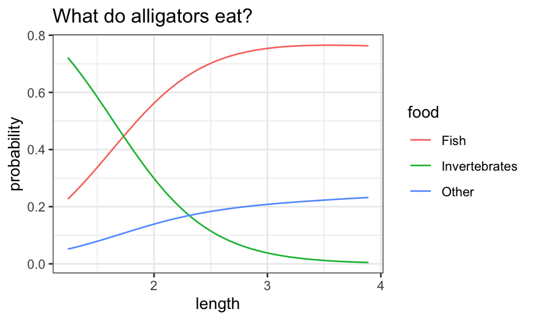
Bigger alligators prefer fish and, to a lesser extent, “other.”
Smaller alligators prefer invertebrates.
We finally note that just as with the Poisson, multinomial data is
often overdispersed, so be careful of taking standard errors
literally.